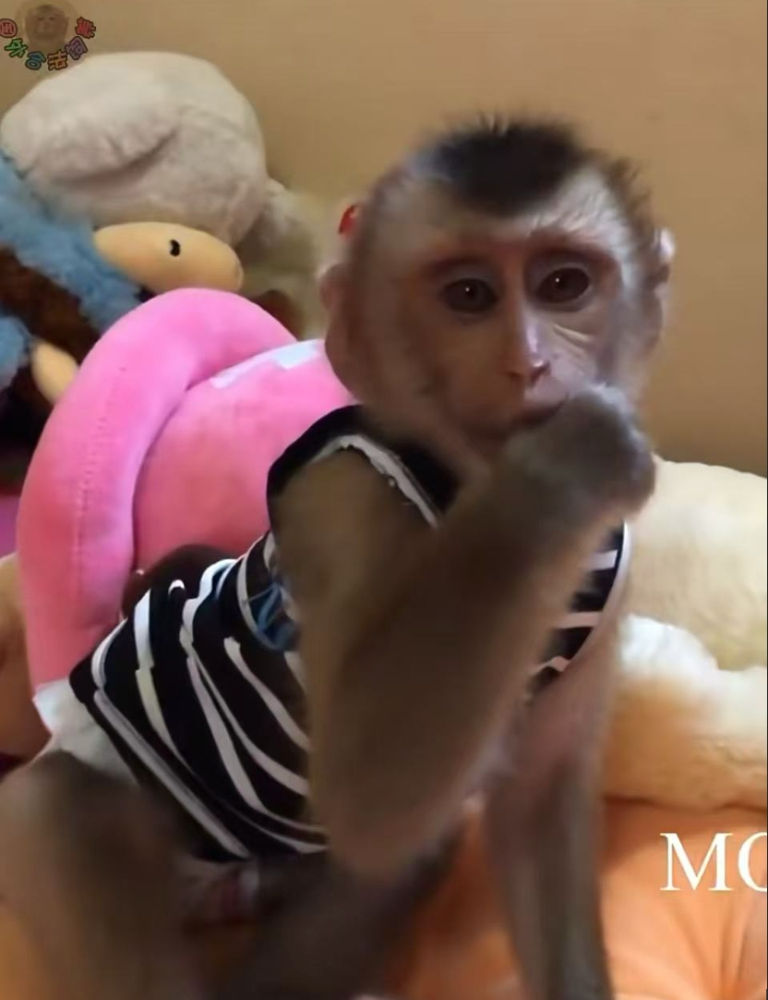
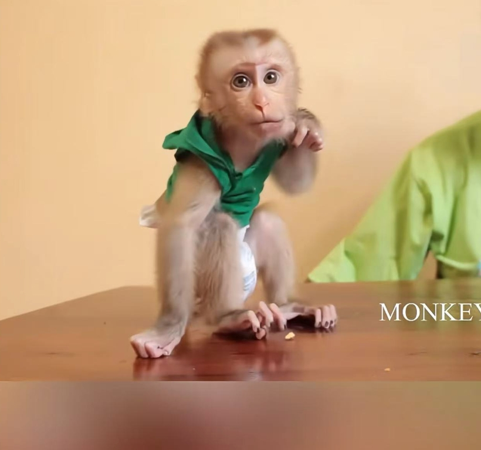
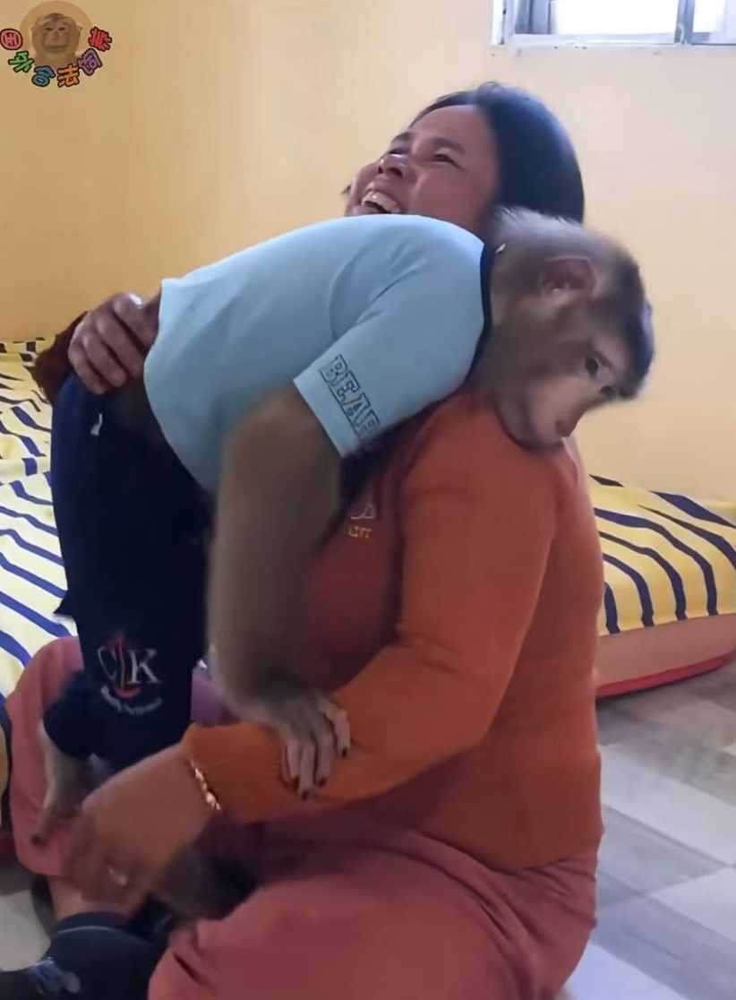
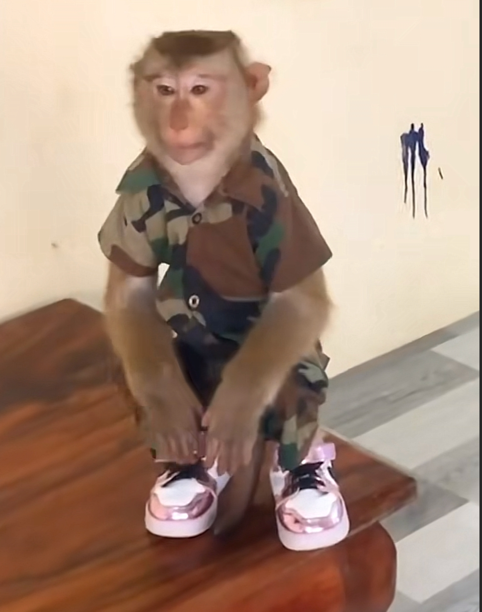
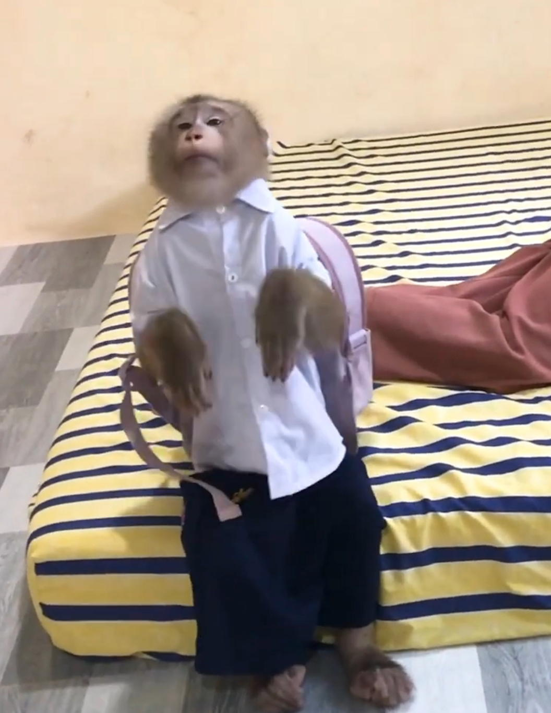

MALEO #1 - Jason
品种：豚尾猴
别称：北豚尾猴、平顶猴、猪尾猴、猪猴、平头哥
年龄：4岁
性别：男猴
生活地区：柬埔寨
特征：背红色书包转圈圈、跳来跳去（刻板行为）
女友：Bela
妹妹：Jessa、Hailey（未知是否有血缘关系）
备注：Jason 跟 Lyly 并非情侣，仅是热门角色的配对误解。

简介与习性
Jason 是一种豚尾猴，头顶发型为倒三角，如不修毛则面毛呈现爱心形状。寿命可达 26 年，发情期时臀部与尾根部皮肤明显肿胀发红。主要分布于越南、老挝、柬埔寨等东南亚地区，在中国云南与西藏也有分布。
作为群居动物，Jason 爬树速度极快。在泰国，当地人甚至训练豚尾猴摘椰子（推荐可在 B 站搜索相关视频）。豚尾猴已列入中国《国家重点保护野生动物名录》一级保护动物。
冷知识
Jason 最出圈的一幕是“背红书包转圈圈”，该书包在 PDD 可购得同款。跳跃与转圈的行为虽然可爱，但也可能源于圈养环境下的刻板行为。网友曾戏称 Jason 为“娟子”，是网络梗的延伸。
更多图片




